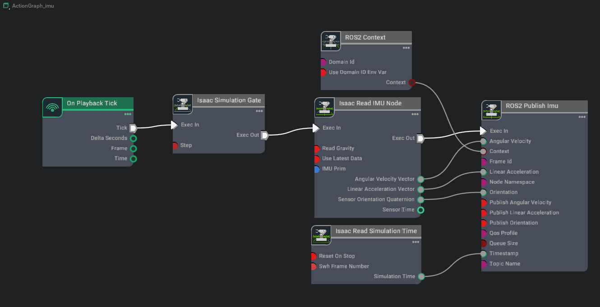

ROS2 Setting Publish Rates#
Learning Objectives#
이 예제에서는 다음 내용을 배웁니다:
Isaac Sim에서 시뮬레이션 프레임 속도를 설정합니다.
ROS 2에 동시에 발행하는 다양한 센서 유형 (IMU, RTX Lidar, Camera)에 대해 서로 다른 발행 속도를 설정합니다.
Getting Started#
사전 준비사항
URDF Import: Turtlebot, ROS 2 Cameras, RTX Lidar Sensors, ROS2 Transform Trees and Odometry 튜토리얼을 완료했어야 합니다.
NVIDIA Isaac Sim을 실행하기 전에 필요한 환경 변수가 설정 및 소스되고, ROS2 extension이 활성화되도록 ROS 2 Installation (Default)을 완료했어야 합니다.
Setting Publish Rates with OmniGraph#
Action Graph는 모든 시뮬레이션 프레임마다 틱되므로, OmniGraph 노드는 시뮬레이션 속도의 배수에 바인딩됩니다. 이 튜토리얼에서는 시뮬레이션의 이러한 배수에서 ROS2 노드를 발행하도록 구성하는 방법을 설명합니다.
Non-RTX Sensors#
IMU 센서와 같이 RTX 렌더링에 의존하지 않는 센서는 Isaac Simulation Gate 노드를 사용하여 시뮬레이션 속도와 다른 속도로 발행하도록 구성할 수 있습니다.
Isaac Sim Content 브라우저로 이동하여 Isaac Sim>Samples>ROS2>Scenario>turtlebot_tutorial.usd를 클릭하여 찾을 수 있는 turtlebot 단순 방 씬을 엽니다.
imu_link prim 하위에 부모 지정된 IMU 센서를 생성합니다. IMU 센서를 추가하는 두 가지 방법이 있으며, 각각 stage의 서로 다른 위치에 배치됩니다:
오른쪽 클릭 메뉴 (권장): Stage 패널에서 prim
/World/turtlebot3_burger_processed/Geometry/base_footprint/base_link/imu_link를 오른쪽 클릭하고 컨텍스트 메뉴에서 Create > Isaac > Sensors > Imu Sensor를 선택합니다. 이렇게 하면 센서가 선택한 imu_link prim 바로 아래에 부모 지정됩니다.메뉴 바: 상단 Create > Sensors > Imu Sensor 메뉴 바 항목은 대신 stage 루트에 센서를 생성합니다. 이 경로를 사용하면 Stage 패널에서 결과 센서 prim을 imu_link 아래로 드래그하여 이 튜토리얼의 나머지 부분과 계층 구조가 일치하도록 합니다.
어떤 방법을 사용하든, 계속하기 전에 Imu 센서가 imu_link prim 아래에 있는지 확인합니다.
/World/turtlebot3_burger_processed/Geometry/base_footprint/base_link/imu_link prim 내부에 새 Action Graph를 생성하고 이름을 ROS_IMU로 지정합니다 (Automatic ROS 2 Namespace Generation을 위해 그래프 배치가 중요합니다). 이를 위해
/World/turtlebot3_burger_processed/Geometry/base_footprint/base_link/imu_link의 prim을 선택한 다음 Window > Graph Editors > Action Graph로 이동하여 Action Graph를 생성합니다.simulation gate 노드를 포함한 IMU 그래프를 만들고 아래와 같이 그래프를 연결합니다.

각 노드에 대해 다음과 같이 속성을 설정합니다:
Isaac Simulation Gate 노드의 Property 탭에서:
step 속성을
2로 설정합니다.2의 step 크기를 가지면 다운스트림 노드가 매 다른 프레임마다 틱됩니다.
Isaac Read IMU Node의 Property 탭에서:
IMU 센서 prim
/World/turtlebot3_burger_processed/Geometry/base_footprint/base_link/imu_link/Imu_Sensor를 imuPrim 입력 필드에 추가합니다.
ROS2 Publish Imu 노드의 Property 탭에서:
frameId 속성을
imu_link로 설정합니다. 이는 Setting Up Odometry에서 생성한 TF publisher가 이미 발행 중인 TF 트리에서 사용하는imu_link프레임과 일치합니다.
{kind=link}
RTX Sensors#
Camera와 RTX Lidar는 Configuring Per-Sensor Tick Rates에 설명된 센서 prim의 omni:sensor:tickRate 속성을 사용하여 시뮬레이션 속도와 다른 속도로 발행하도록 구성할 수 있습니다.
경고
Isaac Sim의 이전 버전은 센서 발행 속도를 제어하기 위해 ROS2 헬퍼 노드의 frameSkipCount 매개변수를 사용했습니다. 이는 현재 deprecated되었습니다.
frameSkipCount가 0이 아닌 값으로 설정되고 해당 센서 prim의 omni:sensor:tickRate가 0이 아닌 값으로 설정된 경우, frameSkipCount가 센서의 tick rate와 주기적으로 정렬되지 않을 수 있어 메시지 발행 빈도가 예상치 못한 결과를 초래할 수 있습니다. 전체 마이그레이션 가이드는 Configuring Per-Sensor Tick Rates와 Multi-Tick Rendering을 참조하세요.
/World/turtlebot3_burger_processed/Geometry/base_footprint/base_link/base_scan/ROS_LidarRTX/LaserScanPublish에 피드하는Isaac Create Render Product노드의cameraPrim으로 참조된OmniLidar) 2D Lidar prim/World/turtlebot3_burger_processed/Geometry/base_footprint/base_link/base_scan/Example_Rotary_2D을 선택합니다. Property 탭에서:omni:sensor:tickRate를5로 설정합니다. laser scan은 틱당 한 번 발행되므로, 이는R_lidar = 5Hz의 발행 속도를 나타냅니다 (시뮬레이션 속도가 최소 5 Hz인 경우 시뮬레이션 속도와 무관).omni:sensor:Core:scanRateBaseHz를5로 설정하여 일치시킵니다. Lidar가 프레임당 부분 스캔으로 폴백하는 대신 틱당 전체 스캔을 축적하려면 두 값이 같아야 합니다 (OmniLidar Tick Rate Must Equal scanRateBaseHz 참조). 제공된Example_Rotary_2D에셋은 기본값으로10이므로 낮춰야 합니다.
이 튜토리얼에서 포인트 클라우드를 발행할 필요가 없으므로, 포인트 클라우드용 Ros2RTXLidarHelper 노드를 선택하고 /World/turtlebot3_burger_processed/Geometry/base_footprint/base_link/base_scan/ROS_LidarRTX/PointCloudPublish에서 enabled 속성의 체크를 해제하여 비활성화합니다.
camera Action Graph /World/ActionGraph_camera를 엽니다. /World/ActionGraph_camera/isaac_create_render_product_01에서 enabled 속성의 체크를 해제하여 두 번째 카메라 렌더 제품을 비활성화합니다.
camera prim
/World/Camera_1(두/World/ActionGraph_camera/ros2_camera_helper와/World/ActionGraph_camera/ros2_camera_info_helper에 모두 피드하는Isaac Create Render Product노드의cameraPrim으로 참조된Camera)을 선택합니다.OmniSensorAPI스키마를 적용하고omni:sensor:tickRate를15로 설정하면/camera_1/rgb/image_raw와/camera_1/rgb/camera_info모두R_cam = 15Hz로 발행됩니다 (시뮬레이션 속도가 최소 15 Hz인 경우 시뮬레이션 속도와 무관). 각 카메라에 스키마를 적용하고 속도를 설정하려면 Script Editor (Window > Script Editor)에서 다음을 실행합니다:import isaacsim.core.experimental.utils.prim as prim_utils # Cameras created from the Create > Camera menu lack the OmniSensorAPI schema, # so omni:sensor:tickRate is unavailable until the schema is applied. Apply it to # each existing camera, then set the publish rate (Hz). for path in ("/World/Camera_1", "/World/Camera_2"): camera_prim = prim_utils.get_prim_at_path(path) camera_prim.ApplyAPI("OmniSensorAPI") camera_prim.GetAttribute("omni:sensor:tickRate").Set(15)
참고
상단 Create > Camera 메뉴 바에서 생성된 카메라 (선행 튜토리얼 ROS 2 Cameras에서처럼)는 기본적으로
OmniSensorAPI스키마가 없기 때문에omni:sensor:tickRate속성을 갖지 않습니다; 제공된turtlebot_tutorial.usd는 이미/World/Camera_1과/World/Camera_2에 스키마가 적용되어 있습니다. 스키마가 적용되면 Property 탭에서 직접omni:sensor:tickRate를 조정할 수 있습니다.이 튜토리얼에서는 Camera1의 depth 이미지를 발행할 필요가 없습니다. /World/ActionGraph_camera/ros2_camera_helper_02에서 enabled 속성의 체크를 해제하여 depth 이미지용 camera helper를 비활성화합니다.
Checking ROS 2 Publish Rate#
Play를 눌러 시뮬레이션을 시작합니다.
다음 명령을 사용하여 각 ROS 토픽의 발행 속도를 확인합니다:
ros2 topic hz /topic_name
/topic_name은 아래 나열된 각 센서 토픽으로 교체됩니다.발행 속도는 추정치입니다. 고성능 머신에서 최대 FPS는 이전 섹션에서 설정한
target_hz(기본값 60 Hz)에 더 가깝습니다.토픽은
target_hz에 따라 다르게 스케일링되는 두 가지 카테고리로 나뉩니다:OnPlaybackTick 기반 퍼블리셔 (앱 업데이트에 의해 게이팅됨):
/clock:
target_hz(기본 ~60 Hz; 앱 업데이트당 하나의 메시지)./imu:
target_hz / k_imu(기본 ~30 Hz;k_imu = 2는 앞에서 설정한 Isaac Simulation Gate step).
멀티틱 스케줄 RTX 센서 (
/ExternalSimulationTime과 센서별omni:sensor:tickRate에 의해 게이팅됨, 시뮬레이션이 실시간으로 실행될 때 - 즉 Setting the Simulation Rate (Advanced)의 스니펫을 사용한 경우):/scan:
min(R_lidar, target_hz) = 5Hz (target_hz에서target_hz >= 5인 한 일정)./camera_1/rgb/image_raw:
min(R_cam, target_hz) = 15Hz (target_hz에서target_hz >= 15인 한 일정)./camera_1/rgb/camera_info: RGB와 동일, 두 헬퍼가 같은 Camera prim의 tick rate를 공유하기 때문입니다.
이 튜토리얼의 모든 단계가 포함된 파일은 Isaac Sim Content 브라우저로 이동하여 Isaac Sim>Samples>ROS2>Scenario>turtlebot_tutorial_multi_sensor_publish_rates.usd를 클릭하여 열 수 있습니다. 파일을 열고 나서 목표 시뮬레이션 속도를 설정하려면 Setting the Simulation Rate (Advanced)의 단계를 실행하는 것을 잊지 마세요.
참고
/camera_1/rgb/image_raw 토픽이 예상보다 느린 속도로 발행되는 경우, 각 이미지 메시지의 큰 크기가 네트워크 트래픽 또는 DDS 큐 관리에서 병목 현상을 일으키기 때문일 수 있습니다. 발행 속도를 개선하려면 렌더 제품 해상도의 크기를 줄여보세요. 이는 이미지 publisher에 연결된 렌더 제품 노드 /World/ActionGraph_camera/isaac_create_render_product로 이동하고 씬을 재생하기 전에 차원을 수정하면 됩니다.
Setting the Simulation Rate (Advanced)#
Isaac Sim에는 세 가지 속도 관련 클록이 있습니다: 물리 씬의 step rate (UsdPhysicsScene.timeStepsPerSecond), timeline의 틱당 dt (stage.timeCodesPerSecond와 timeline의 targetFramerate 결합), 애플리케이션의 실행 루프 틱 속도 (/app/runLoops/main/rateLimitFrequency). 실시간 재생을 위해서는 세 가지 모두 같은 값으로 일관되게 설정하는 것이 좋습니다. isaacsim.core.simulation_manager.SimulationManager.setup_simulation()은 물리 씬의 step rate를 구성하고; isaacsim.core.rendering_manager.RenderingManager.set_dt()는 timeline과 실행 루프를 함께 구성합니다. 이 두 함수를 쌍으로 사용하세요.
경고
Isaac Sim 6.0에서는 기본값인 60.0과 다른 값으로 시뮬레이션 물리 씬의 step rate와 timeline의 틱당 dt를 수정한 후 시뮬레이션을 재생하면 전체 UI 앱에서 알려진 치명적인 충돌이 있습니다. 이는 향후 릴리스에서 수정될 것입니다.
Isaac Sim 디렉터리의 독립 실행형 Python 스크립트에 다음 스니펫을 붙여넣으세요, 예: test_ros2_publish_rates.py.
from isaacsim import SimulationApp
app = SimulationApp({"headless": False})
import carb
import isaacsim.core.experimental.utils.app as app_utils
import isaacsim.core.experimental.utils.stage as stage_utils
from isaacsim.core.rendering_manager import RenderingManager
from isaacsim.core.simulation_manager import SimulationManager
from isaacsim.storage.native import get_assets_root_path
app_utils.enable_extension("isaacsim.ros2.bridge")
app.update()
assets_root_path = get_assets_root_path()
stage_utils.open_stage(
assets_root_path + "/Isaac/Samples/ROS2/Scenario/turtlebot_tutorial_multi_sensor_publish_rates.usd"
)
# Set physics, timeline, and run-loop rates coherently before pressing Play.
# Assumes `/app/runLoops/main/rateLimitEnabled` is true (default in the full
# Isaac Sim GUI app; false in `isaacsim.exp.base.kit` / standalone Python). If
# it is false, set it to True first or the loop will tick unthrottled. See the
# `RenderingManager.set_dt` docstring for the full effect list.
target_hz = 60
SimulationManager.setup_simulation(dt=1.0 / target_hz)
RenderingManager.set_dt(1.0 / target_hz)
app_utils.play()
while app.is_running():
app.update()
app_utils.stop()
app.close()
그런 다음 다음 명령을 사용하여 스크립트를 실행합니다:
./python.sh test_ros2_publish_rates.py \
--/app/runLoops/main/rateLimitEnabled=true \
--/app/runLoops/main/rateLimitFrequency=60 \
--/app/runLoops/main/manualModeEnabled=true
이렇게 하면 시뮬레이션이 벽시계 기준 초당 60 프레임 (FPS)으로 실행됩니다.
ROS2가 설치되고 활성화된 별도의 터미널 창에서 다음 명령을 사용하여 각 ROS 토픽의 발행 속도를 확인합니다:
ros2 topic hz /topic_name
스크립트에서 target_hz를 변경한 다음 위에 제공된 명령으로 재실행하면 토픽이 두 가지 다른 메커니즘에 의해 게이팅되기 때문에 각 토픽이 다르게 스케일링됩니다:
OnPlaybackTick 기반 헬퍼 (
/clockpublisher와 Isaac Simulation Gate를 통한 IMU 그래프)는 앱 업데이트당 한 번 실행되므로, 벽시계 속도가target_hz에 선형으로 스케일링됩니다 (IMU의 경우 gatestep으로 나뉨).멀티틱 스케줄 RTX 센서 (
/scan,/camera_1/rgb/image_raw,/camera_1/rgb/camera_info)는 렌더러의 시뮬레이션 시간이1 / omni:sensor:tickRate만큼 진행되면 실행되므로,target_hz와 무관하게 구성된 Hz로 유지됩니다 -target_hz가 구성된 tick rate 아래로 떨어질 때까지, 그 시점에서 센서는 앱 업데이트당 하나의 틱으로 제한됩니다. 기본 메커니즘은 Architecture: Timeline, Physics, and the Renderer를 참조하세요.
튜토리얼 설정 (R_lidar = omni:sensor:tickRate = 5 on the Lidar prim, R_cam = omni:sensor:tickRate = 15 on the Camera prim, IMU gate step = 2)에 대한 벽시계 발행 속도는:
|
|
|
|
|
|---|---|---|---|---|
30 |
30 |
15 |
5 |
15 |
60 |
60 |
30 |
5 |
15 |
120 |
120 |
60 |
5 |
15 |
240 |
240 |
120 |
5 |
15 |
10 |
10 |
5 |
5 |
10 (capped at |
발행 속도는 추정치입니다. 고성능 머신에서 최대 FPS는 이전 섹션에서 설정한 target_hz (기본값 60 Hz)에 더 가깝습니다.
중요
실제 프레임 속도는 머신의 성능에 따라 다릅니다. 렌더러가 target_hz를 유지할 수 없으면 센서 발행 속도가 비례적으로 감소합니다. 세 개의 클록 간의 관계와 동기화가 깨질 때 발생하는 일 (슬로우 모션, 빨리 감기)에 대해서는 Architecture: Timeline, Physics, and the Renderer를 참조하세요.
일반 공식은:
clock_hz = target_hz
imu_hz = target_hz / k_imu # k_imu = Isaac Simulation Gate step (= 2 here)
scan_hz = min(R_lidar, target_hz)
camera_hz = min(R_cam, target_hz)
참고
/camera_1/rgb/image_raw (및 /camera_1/rgb/camera_info) 발행 속도는 멀티틱 스케줄러가 구성된 R_cam Hz로 실행될 때에도 테이블의 예측값 아래로 떨어질 수 있습니다. RGB 이미지 경로는 다른 토픽보다 계산 비용이 더 많이 듭니다: 렌더 제품 비용은 해상도에 따라 스케일링되며, 발행된 이미지 크기도 DDS/네트워크 레이어에 부담을 줍니다. 관찰된 속도가 R_cam보다 낮으면 먼저 시도할 두 가지 조정은 (1) /World/ActionGraph_camera/isaac_create_render_product의 렌더 제품 해상도를 낮추는 것과, (2) /World/Camera_1 prim의 omni:sensor:tickRate를 낮춰 렌더 빈도를 줄이는 것입니다. 이는 위의 네트워크/DDS 참고사항을 보완합니다.
참고
Lidar prim의 omni:sensor:tickRate를 변경하면 omni:sensor:Core:scanRateBaseHz도 일치하도록 변경해야 합니다. 두 값이 같아야 하며, 그렇지 않으면 Lidar가 틱당 전체 스캔을 축적하는 대신 매 프레임마다 부분 스캔을 방출합니다; OmniLidar Tick Rate Must Equal scanRateBaseHz를 참조하세요.
Troubleshooting#
관찰된 발행 속도가 목표 시뮬레이션 프레임 속도와 매우 다르면 다음을 시도해보세요:
지속적인 시뮬레이션 프레임 속도 설정을 지우기 위해 팩토리 설정으로 Isaac Sim을 실행해 보세요:
./isaac-sim.sh --reset-user컴퓨터의 CPU 사용량을 확인하여 병목 현상을 식별합니다. Isaac Sim이 매우 높은 사용량을 보이면 Fabric을 활성화하여 실행해보세요:
./isaac-sim.fabric.sh --reset-user중요
위 명령은 실험적이며 Isaac Sim의 모든 기능이 지원되지는 않습니다. 그러나 전반적으로 더 나은 성능을 관찰할 수 있습니다. Fabric으로 처음 실행할 때만
--reset-user플래그를 사용해야 합니다.
Summary#
이 튜토리얼에서 다룬 내용:
Python 인터페이스의
SimulationManager.setup_simulation과RenderingManager.set_dt를 사용하여 일관된 시뮬레이션 속도 설정.다양한 센서 유형에 대해 서로 다른 발행 속도 설정: 비RTX 센서 (IMU)에는 Isaac Simulation Gate, RTX 센서 (Lidar, Camera)에는 센서 prim의
omni:sensor:tickRate.
Next Steps#
NVIDIA Isaac Sim의 ROS 2 OmniGraph 노드에 대한 QoS 프로파일 설정을 배우려면 ROS2 Tutorials 시리즈의 다음 튜토리얼인 ROS 2 Quality of Service (QoS)로 계속 진행하세요.